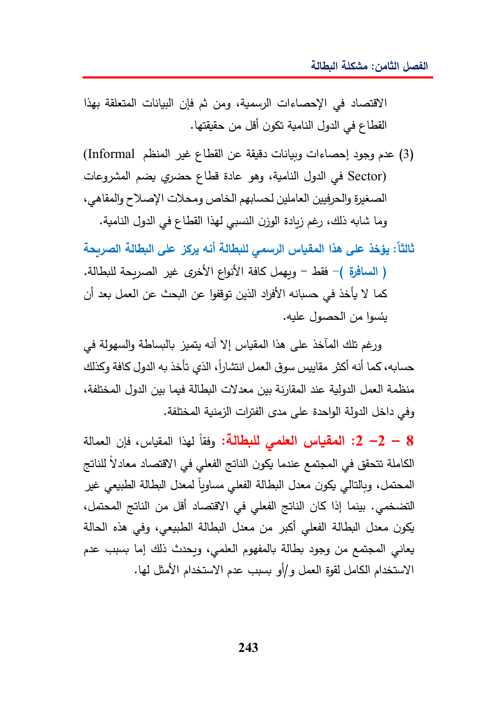

lageabGayCoil9S(28¢Uni(Informaljt¢jcagespic(3)Cleyaie¢UbidaleSector)(gag418Leybe5SpyAa)NaAlaaSV!—Laid-()aesyeGaullyeQuillLSAlgguallyAbbajacalVY)IdaSaLal!abAALSayS86ByesASTLSGayAlayaaieAulgalleal!Aries!gre(cleUladyMeal)laghladyALE:2-2-8GalYolenLateGiaALISard(ceilOS«cialZa)GedalesiiBLNodeAlaJanepS)Aa)pieLeldGaleGua!aacCamasCe243